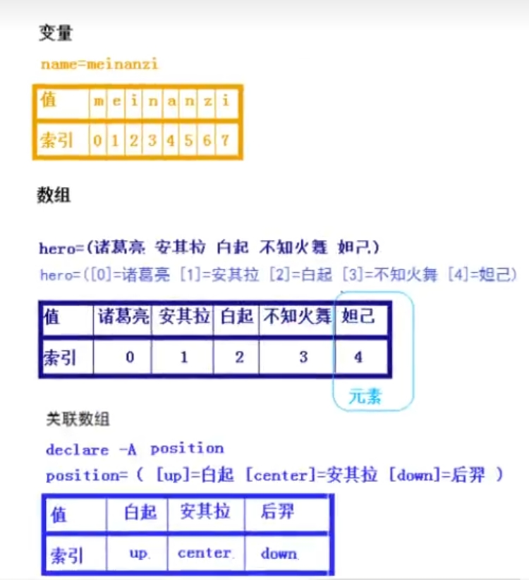

Linux的Shell编程
shell语言的概述
shell的背景
shell语言是指UNIX操作系统的命令语言，也是一种程序设计语言。
shell的作用
可以自动化的执行命令，提升效率。
shell的执行方式
bash file1.sh #利用bash执行 |
shell的执行方式的区别
bash file1.sh，sh file1.sh和./file1.sh采用的是子shell，而. file1.sh和source file1.sh采用的是本shell。
- 子shell：重新开启一个环境，即独立的环境，执行完成后退出，执行结果不会影响本环境。简单的例子如果shell脚本里面有前往其他目录的命令。shell结束后会回到执行目录，因为是在新环境中执行的。
- 本shell：在本环境中执行，执行结果会影响本环境。简单的例子如果shell脚本里面有前往其他目录的命令。shell结束后就会在新的目录。
- 最好使用前三种执行方式。
shell解释器
可以通过cat /etc/shells或者chsh -l查询
[root@www ~]# cat /etc/shells |
shell的变量
简介
用固定的字符串去表达固定的内容
自定义变量
简述
用户自定义的变量名和变量值，注意=两边不能加空格，不能加空格，不能加空格
定义变量
name="archer" |
常见错误
- 变量名不能以数字开头
=左右不能有空格，空格在shell起分割左右，会被看做是多个命令- 变量的值如果有空格必须加引号
重复定义变量
- 如果重复定义变量时，会被覆盖
a=123
a=789
echo $a
[root@www ~]# echo $a
789 - 如果需要变量叠加的话，可以使用
a="$a"789或者a=${a}789a=123
a="$a"789
echo $a
[root@www ~]# echo $a
123789
查看变量
使用set命令可以查看变量
set | grep a |
删除变量
使用命令：unset 变量名
unset name |
实例
!/usr/bin/bash |
交互式定义变量
read从键盘读入变量值，read 变量名read -p "请输入变量值：" ppp，-p表示print，会打印后面那一段话[root@www ~]# read -p "请输入变量值：" ppp
请输入变量值：258
[root@www ~]# echo $ppp
258
注意三种引号
""弱引用：里面只会对一些变量起作用，如果有特殊符号，会把特殊符号的效果执行''强引用：取消特殊符号的效果，单引号里面是啥就是啥``优先执行：引号里面必须为命令，会把引号里面的命令执行，把执行后的结果保存[root@www ~]# a=123
[root@www ~]# a="$123"145
[root@www ~]# echo $a
23145
[root@www ~]# a=123
[root@www ~]# a='$123'145
[root@www ~]# echo $a
123145
[root@www ~]# a=`ls /home`
[root@www ~]# echo $a
uuuu uuuuu www
变量的索引
本质上变量存储的是一段字符串，和python的字符串类似，shell里面的变量也会存在索引，echo ${name:num1:num2}，num1表示索引，从哪个位置开始，num2表示看多少个字符，没有的话，看后面的所有字符
name=meinanzi |
整数运算
方法1
使用expr命令，expr 1 + 2 或者 expr $num1 + $num2，可以使用+加，-减，\*乘，/除，%取余，注意由于*在shell中表示任意字符，因此需要用\进行转义。
num1=1 |
方法2
使用$(())命令，$(($num1 + $num2))，$((num1 + num2))，可以按照正常的四则运算进行计算
num1=1 |
方法3
使用$[]命令，$[5+2]，$[$num1 + $num2]，$[num1 * num2]，可以按照正常的四则运算进行计算
num1=1 |
方法4
使用let命令，let sum=2+3;echo $sum，let sum++;echo $sum，可以按照正常的四则运算进行计算，和C语言类似，可以使用++，--等语法
[root@www ~]# let sum=2+3;echo $sum |
小数运算
shell执行小数的运算需要用到bc，用法"scale=保留小数的位数;6/4"|bc，"scale=2;6/4"|bc
yum -y install bc |
环境变量
环境变量可以参考：Centos中的环境变量
位置变量
- 由系统定义，每个程序都会有位置变量，位置变量语法：
$0(命令名)，$1~$9(位置0~位置9)，$9以后有特殊定义 - 示例
!/usr/bin/bash
name=$0
number1=$1
number2=$2
echo -n "平均值为：" #-n表示不换行
echo "scale=2;($number1+$number2)/2" | bc
echo $name
[root@www ~]# sh ggg.sh 1 2
平均值为：1.50
ggg.sh
预定义变量
$0：脚本/程序名字$*：所有的参数$#：参数的个数$?：上一个程序的返回值，(0是成功，非0失败)$$：程序的PIDvim ggg.sh
!/usr/bin/bash
number1=$1
number2=$2
echo "程序名字:" $0
echo "所有参数:" $*
echo "程序参数个数:" $#
echo "程序的PID:" $$
[root@www ~]# sh ggg.sh 1 2
程序名字: ggg.sh
所有参数: 1 2
程序参数个数: 2
程序的PID: 2009
[root@www ~]# echo $? #表明上一个程序执行成功
0
变量的示例
- 脚本创建用户名和密码，
user.shvim user.sh
!/usr/bin/bash
useradd $1
echo "$2" | passwd --stdin "$1" &> /dev/null #--stdin 表示标准输入输出，说明不管后面出现什么都输入$2的内容，因为输入密码要输入两次
echo "$1" 创建成功，密码是："$2" - 脚本配置本地
yum源，yum.shvim yum.sh
!/usr/bin/bash
mount /dev/cdrom /mnt &> /dev/null
cp -r /etc/yum.repos.d /etc/yum.repos.d_back
rm -rf /etc/yum.repos.d/*
cat <<EOF >/etc/yum.repos.d/yum.repo
[local]
name=localyum
baseurl=file:///mnt/AppStream/
enabled=1
gpgcheck=0
EOF
yum repolist all
shell的判断语句
shell的条件测试
数值比较
- 语法：
[ $num1 operation $num2 ]，注意[]作为一个语法规则，不能和其他字符连在一起，必须要打空格，执行结果保存在$?中，为0表示运算为真，1表示运算为假。类型 描述 [ $num1 -gt $num2 ]大于 [ $num1 -lt $num2 ]小于 [ $num1 -eq $num2 ]等于 [ $num1 -ne $num2 ]不等于 [ $num1 -ge $num2 ]大于等于 [ $num1 -le $num2 ]小于等于 num1=20
num2=10
[root@www ~]# [ $num1 -gt $num2 ];echo $?
0
[root@www ~]# [ $num1 -lt $num2 ];echo $?
1
[root@www ~]# [ $num1 -eq $num2 ];echo $?
1
[root@www ~]# [ $num1 -ne $num2 ];echo $?
0
[root@www ~]# [ $num1 -ge $num2 ];echo $?
0
[root@www ~]# [ $num1 -le $num2 ];echo $?
1
文件测试
- 语法：
[ 操作符 文件/目录 ]，注意[]作为一个语法规则，不能和其他字符连在一起，必须要打空格，执行结果保存在$?中，为0表示运算为真，1表示运算为假，不止这些，有很多。类型 描述 [ -f filename ]当filename存在时返回真 [ -b filename ]当filename存在且为块文件时返回真 [ -d pathname ]当pathname存在且为文件夹时返回真 [ -h filename ]当filename存在且为符号链接文件时返回真 [ -L filename ]当filename存在且为符号链接文件时返回真 [ -c filename ]当filename存在且为字符文件时返回真 [ -e pathname ]当pathname指定的文件或路径存在时返回真 [ -u pathname ]当pathname指定的文件或路径存在，并设置了SUID位时返回真 [ -g pathname ]当pathname指定的文件或路径存在，并设置了SGID位时返回真 [ -k pathname ]当pathname指定的文件或路径存在，并设置了“粘滞”位时返回真 [ -p filename ]当filename指定的文件存在并且文件类型是管道时返回真 [ -r pathname ]当pathname指定的文件或路径存在，并且可读时返回真，对于当前用户而言 [ -s filename ]当filename指定的文件并且文件大小大于0时返回真 [ -S filename ]当filename指定的文件存在并且是Socket时返回真 [ -w pathname ]当pathname指定的文件或路径存在，并且可写时返回真，对于当前用户而言 [ -x pathname ]当pathname指定的文件或路径存在，并且可执行时返回真，对于当前用户而言 [ -O pathname ]当pathname指定的文件或路径存在，并且属主是当前用户时为真 [ -G pathname ]当pathname指定的文件或路径存在，并且属组是当前用户的组时为真 [root@www ~]# [ -f file1.sh ];echo $?
0
[root@www ~]# [ -f file2.sh ];echo $?
1
[root@www ~]# [ -b /dev/sda ]; echo $?
0
[root@www ~]# [ -b /root/file1 ]; echo $?
1
[root@www ~]# [ -d /root/ ]; echo $?
0
[root@www ~]# [ -d /root/file1.sh ]; echo $?
1
[root@www ~]# [ -h /bin ]; echo $?
0
[root@www ~]# [ -h /root/file1.sh ]; echo $?
1
[root@www ~]# [ -L /bin ]; echo $?
0
[root@www ~]# [ -c /dev/sg0 ];echo $?
0
[root@www ~]# [ -e /root ];echo $?
0
[root@www ~]# chmod u+s bash.sh;[ -u /root/bash.sh ];echo $?
0
[root@www ~]# chmod g+s bash.sh;[ -g /root/bash.sh ];echo $?
0
[root@www ~]# chmod o+t bash.sh;[ -k /root/bash.sh ];echo $?
0
[root@www ~]# [ -p /run/systemd/initctl/fifo ];echo $?
0
[root@www ~]# [ -r /root/file1.sh ];echo $?
0
[root@www ~]# [ -s /root/file1.sh ];echo $?
0
[root@www ~]# [ -S /run/lvm/lvmpolld.socket ];echo $?
0
[root@www ~]# [ -w /root/file1.sh ];echo $?
0
[root@www ~]# [ -x /root/file1.sh ];echo $?
0
[root@www ~]# [ -O /root/file1.sh ];echo $?
0
[root@www ~]# [ -G /root/file1.sh ];echo $?
0
字符串比较
- 语法：
[ string1 operation string2 ]，注意[]作为一个语法规则，不能和其他字符连在一起，必须要打空格，执行结果保存在$?中，为0表示运算为真，1表示运算为假类型 描述 [ $string1 = $string2 ]字符串相等 [ $string1 != $string2 ]字符串不相等 [ -z $string ]判断字符串的个数是否为 0，如果个数为0，返回真[ -n $string ]判断字符串的个数是否为 0，如果个数不为0，返回真[root@www ~]# [ "yes" = "yes" ];echo $?
0
[root@www ~]# [ "yes" != "yes" ];echo $?
1
[root@www ~]# string1=yes
[root@www ~]# string2=yes
[root@www ~]# [ $string1 = $string2 ];echo $?
0
[root@www ~]# [ $string1 != $string2 ];echo $?
1
[root@www ~]# string="";[ -z $string ];echo $?
0
[root@www ~]# string="DDD";[ -n $string ];echo $?
0
[root@www ~]# num=${#string};echo $num # ${#string}可以统计字符串的长度。
3
多条件测试
- 语法：如下，注意
[]作为一个语法规则，不能和其他字符连在一起，必须要打空格，执行结果保存在$?中，为0表示运算为真，1表示运算为假，and有两种写法：&&,-a。or也有两种写法：||,-o类型 描述 [ 条件1 -a 条件2 ]两边都为真才为真，否则为假 [[ 条件1 && 条件2 ]]两边都为真才为真，否则为假 [ 条件1 ] && [ 条件2 ]两边都为真才为真，否则为假 [ 条件1 -o 条件2 ]一边为真就为真，否则为假 [[ 条件1 || 条件2 ]]一边为真就为真，否则为假 [ 条件1 ] || [ 条件2 ]一边为真就为真，否则为假 [root@www ~]# [ 1 -lt 2 -a 5 -lt 10 ];echo $?
0
[root@www ~]# [[ 1 -lt 2 && 5 -lt 10 ]];echo $?
0
[root@www ~]# [ 1 -lt 2 ] && [ 5 -lt 10 ];echo $?
0
[root@www ~]# [ 2 -lt 1 -o 5 -lt 10 ];echo $?
0
if条件选择
单分支结构
- 语法：
if [ command/test ] ; then xxxxx; fi，;表示语句的结束，也可以使用换行。#语法
if [ command/test ]
then
xxxxx
fi#例子
vim add_user.sh
!/usr/bin/bash
id $1 &> /dev/null
if [ $? -ne 0 ] ;then
useradd $1
fi
双分支结构
- 语法：
if [ command/test ]; then xxxxx; else xxxxx; fi，下面例子用回车代替了;#语法
if [ command/test ]
then
xxxxx
else
xxxxx
fi#例子
vim add_user2.sh
!/usr/bin/bash
id $1 &> /dev/null
if [ $? -ne 0 ]
then
useradd $1
echo '123456' | passwd --stdin $1 >& /dev/null
echo '创建成功'
else
echo 'user 已经存在'
fi
多分支结构
- 语法：
if 条件测试1; then 命令序列1; elif 条件测试2; then 命令序列2; elif 条件测试3; then 命令序列3; else 命令序列4; fi#语法
if 条件测试1
then
命令序列1
elif 条件测试2
then
命令序列2
elif 条件测试3
then
命令序列3
else
命令序列4
fi#例子
vim date.sh
!/usr/bin/bash
hour=`date +%H`
if [ $hour -ge 6 -a $hour -le 10 ]
then
echo "this is morning"
elif [ $hour -ge 14 -a $hour -le 18]
then
echo "this is afternoon"
else
echo "this is night"
fi
嵌套if判断
- 语法
if 条件测试
then
命令序列
if 条件测试
then
命令序列
else
命令序列
fi
else
命令序列
fi#例子
vim add_user3.sh
!/usr/bin/bash
if id $1 &> /dev/null
then
echo "用户$1已经存在，不需要创建"
else
read -p "请输入密码，密码不小于七位：" password
if [ ${#password} -ge 7 ] #${#password}获取字符串的位数
then
useradd $1
echo password | passwd --stdin $1 > /dev/null
echo "用户$1创建成功，密码为：$password"
else
echo "密码不符合要求"
fi
fi
调试脚本
- 可以使用
sh -n 02.sh 参数1 ...仅调试脚本中的错误语法，也可以使用sh -vx 02.sh 参数1 ...以调试的方式执行，查询整个执行过程，其中的+是计算机执行的过程，其他是阅读过程[root@www ~]# sh -n user.sh #没有任何输出表明语法正确
[root@www ~]# sh -xv add_user3.sh ttt
!/usr/bin/bash
if id $1 &> /dev/null
then
echo "用户$1已经存在，不需要创建"
else
read -p "请输入密码，密码不小于七位：" password
if [ ${#password} -ge 7 ]
then
useradd $1
echo password | passwd --stdin $1 > /dev/null
echo "用户$1创建成功，密码为：$password"
else
echo "密码不符合要求"
fi
fi
+ id ttt
+ read -p 请输入密码，密码不小于七位： password
请输入密码，密码不小于七位：258
+ '[' 3 -ge 7 ']'
+ echo 密码不符合要求
密码不符合要求
注意事项
[]表示条件测试，注意这里的空格很重要[的后面和]的前面一定要有空格。- 在shell中，
then和fi是分开的语句。如果要在一行里面写，需要输入;隔开，否则就要换行。 - 注意
if判断中对于变量的处理，需要加上引号，以免不必要的错误，没有加双引号会在一些含空格等的字符串中产生错误。 - 判断不支持浮点值
- 默认，运行
if语句中的命令，所产生的错误信息，任然会出现在脚本的错误提示中。 -z，-n来判断字符串的长度的时候，没有定义的变量的长度也是0。- 空变量和没有初始化的变量可能会对shell脚本产生灾难性的影响，因此不确定变量内容的时候，在测试前使用
-n或-z测试一下。 $?变量包含了之前执行命令的退出状态，可用于检测退出状态。
case模式匹配
- 语法
case 变量 in
模式1)
命令序列1
;;
模式2)
命令序列2
;;
模式3)
命令序列3
;;
*)
无匹配命令后执行序列 #同else
;;
esac#例子
vim del_user.sh
!/usr/bin/bash
read -p "pleae input a username:" user
read -p "确认删除吗？[yes/no]：" action
# case写法
case "$action" in
Y|y|YES|yes|Yes|Yes|YEs) #同种类型可以用|隔开，表示同样的情况
userdel -r user
echo "${user} is deleted"
;;
N|n|no|No|NO|nO)
echo "取消删除"
*)
echo "thank you"
;;
esac
shell的循环语句
for循环
- 语法：
for 变量名 [ in 取值列表 ]; do 循环体;done，用{} &包裹循环体可以实现并发，提升效率，for 变量名 [ in 取值列表 ]; do {循环体} &;done;wait，其用&把循环体的指令交给了后台运行，就好像同时好多人在做这件事。#语法
for 变量名 [ in 取值列表 ]
do
循环体
done
#并发语法
for 变量名 [ in 取值列表 ]
do
{
循环体
} &
done
wait #执行完成后，可能不会回到控制窗口，需要等到所有命令都结束#例子
vim make_dir.sh
!/usr/bin/bash
for i in {1..10}
do
mkdir dir"${i}"
done
# 例子，检查主机是否在线
vim ip.sh
!/usr/bin/bash
ip_up.txt #清空文件
ip_down.txt
for i in {0..255}
do
ip=172.16.34."${i}"
ping -c1 -W1 $ip &> /dev/null
if [ $? -eq 0 ]
then
echo $ip |tee -a ip_up.txt #追加并输出
else
echo $ip >> ip_down.txt
fi
done
# 例子，并发检查主机是否在线
vim ip2.sh
!/usr/bin/bash
ip_up.txt #清空文件
ip_down.txt
for i in {0..255}
do
{
ip=172.16.34."${i}"
ping -c1 -W1 $ip &> /dev/null
if [ $? -eq 0 ]
then
echo $ip |tee -a ip_up.txt #追加并输出
else
echo $ip >> ip_down.txt
fi
} &
done
wait #等待前方的任务都执行完
echo "job completed"
# 例子从文件循环创建用户
vim add_user4.sh
!/usr/bin/bash
for i in `cat user.txt`
do
useradd $i
if [ $? -eq 0 ]
then
echo "$i 创建成功"
else
echo "$i 创建失败"
fi
done
while，until循环
while 循环
- 语法：
while 条件测试; do 循环体;done，当条件为真时，执行循环体的内容# 语法
while 条件测试
do
循环体
done# 例子
vim while.sh
!/usr/bin/bash
while :
do
let i++
sleep 1
echo "$i"
if [ $i -eq 13 ]
then
exit 1
fi
done
i=1;while [ $i -lt 10 ]; do echo "$i"; let i++;done
until 循环
- 语法：
until 条件测试; do 循环体;done，当条件为假时，执行循环体的内容# 语法
until 条件测试
do
循环体
done# 例子
vim until.sh
!/usr/bin/bash
i=0
until [[ $i -eq 14 ]]
do
let i++
sleep 1
echo "$i"
done
expect 解决交互问题
- 有些程序难免需要用户的交互，这个就可以解决交互的问题，比如输入
yes或no啥的。 - 安装：
yum -y install expect tcl tclx tcl-devel - 例子，解决
ssh登录交互的问题vim expect.exp
!/usr/bin/expect #需要通过expect启动脚本
spawn ssh root@172.16.34.151
expect{
"yes/no"{send "yes\r";exp_continue}#根据提示回答问题，exp_continue如果没有出现前面的关键字，忽略本次回答
"password:"{send "666666\r"};
}
interact #保留会话，停留在ssh执行后的结果
expect expect.exp
数组和函数
数组
简介
用一个固定的字符串，代替多个不固定的字符串
类型
- 普通数组：只能使用整数作为数组索引
- 关联数组：可以使用字符串作为数组索引，通过字符串自定义索引，类似于
python中的字典

普通型数组
定义普通型数组
- 方法1，直接定义数组
array1=(value1 value2 value3)
array2=(tom jack alice "bash shell") #值里面有空格，需要用引号
array3=($red $green)
array4=(1 2 3 4 5 "linux shell" [20]=stack ddd) #指定索引为20，ddd的索引为21
array5=(`ls /home`) #把命令的值定义为数组 - 方法2，一个一个赋值
数组名[下标]=变量值
array[0]=pear
array[1]=apple
array[2]=peach
数组的查看
echo ${array1[index]} #查看某个数组值 |
array1=(value1 value2 value3) |
关联型数组
关联型数组使用之前，需要先声明，declare -A ass_array
定义关联型数组
- 方法1，一个一个赋值
数组名[索引]=变量值
declare -A ass_array
ass_array[index1]=pear
ass_array[index2]=appel
ass_array[index3]=orange
ass_array[index4]=peach
#查看数组
echo ${ass_array[@]}
[root@www ~]# echo ${ass_array[@]}
peach pear appel orange - 方法2，一次性赋多个值
数组名=([索引1]=value1 [索引2]=value2 [索引3]=value3)
declare -A ass_array1
ass_array1=([index1]=pear [index2]=apple [index3]=orange [index4]=peach)
#查看数组
echo ${ass_array1[@]}
[root@www ~]# echo ${ass_array1[@]}
peach pear apple orange
关联型数组的查看
关联型数组的查看和普通数组的查看一样，就像python的字典一样，类似于key value对的形式
序列
类似于python中的range函数
- 大括号表示
{num1..num2..step} #从num1到num2，步长为step
for i in {1..10..2}; do echo $i; done
[root@www ~]# for i in {1..10..2}; do echo $i; done
1
3
5
7
9 - seq 命令
用法：seq [选项]... 尾数
或：seq [选项]... 首数 尾数
或：seq [选项]... 首数 增量 尾数
以指定增量从首数开始打印数字到尾数。
-f, --format=格式 使用printf 样式的浮点格式
-s, --separator=字符串 使用指定字符串分隔数字(默认使用：\n)
-w, --equal-width 在列前添加0 使得宽度相同【自动补位】
--help 显示此帮助信息并退出
--version 显示版本信息并退出[root@www ~]# seq 2
1
2
[root@www ~]# seq 1 6
1
2
3
4
5
6
[root@www ~]# seq 1 2 6
1
3
5
[root@www ~]# seq -w 1 10
01
02
03
04
05
06
07
08
09
10
[root@www ~]# seq -s ' ' 1 2 10
1 3 5 7 9
[root@www ~]# for i in `seq 1 2 5`; do echo $i; done
1
3
5
数组和循环
通过循环定义和显示数组
- while脚本快速定义数组
vim while2.sh
!/usr/bin/bash
while read line #read 阅读每一个行信息给变量line
do
hosts[++i]=$line #++i是1开始，i++是从0开始
done < /etc/hosts #输入重定向给 while循环
输出每一行
for i in ${!hosts[@]}
do
echo "$i : ${hosts[$i]}"
done - for 循环定义数组
vim for2.sh #for的分割符时空格
!/usr/bin/bash
for line in `cat /etc/hosts`
do
hosts[++i]=$line
done
for i in ${!hosts[@]}
do
echo "$i: ${hosts[$i]}"
done
vim for3.sh
!/usr/bin/bash
OLD_IFS=$IFS
IFS=$'\n' #if的分割符替换为换行
for line in `cat /etc/hosts`
do
hosts[++i]=$line
done
IFS=$OLD_IFS
for i in ${!hosts[@]}
do
echo "$i: ${hosts[$i]}"
done
函数
函数是完成特定功能的代码块，必须要定义之后才能使用
函数的定义
- 方法1
函数名()
{
函数体
}vim function1.sh
!/usr/bin/bash
print()
{
echo "hello world"
}
print #函数的调用
vim function2.sh
!/usr/bin/bash
print()
{
echo "hello $1"
}
print "java" #函数的调用 - 方法2
function 函数名
{
函数体
}vim function3.sh
!/usr/bin/bash
function print
{
echo "hello world"
}
print #函数的调用
流编辑器三剑客
为了快速的处理文本文件
正则表达式
可以被vim，grep，sed和awk命令调用。用于文本匹配。
元字符
元字符是一类字符，他们表达的是不同于字面本身的含义
元字符分类
- 基本正则表达式元字符
符号 描述 例子 ^行首定位符，定位以某个词为行首的某行 grep "^root" /etc/passwd$行尾定位符，定位以某个词为行尾的某行 grep "love$" love.txt.匹配任意一个字符 grep "l.ve" love.txt*匹配 *左侧字符0次或多次grep "k*" love.txt.*匹配任意多个字符 grep "k.*" love.txt[]匹配指定范围内任意一个字符 grep "[lL]ove" love.txt[-]匹配指定范围内任意一个字符，连续范围 grep "[1-9]ove" love.txt[^]匹配不在范围内的一个字符 grep "[^1]ove" love.txt\转义字符，让特殊字符失去特殊意义 grep "l\.ve" love.txt\<词首定位符，查找以后面的词为首的词组 grep "\<love" love.txt\>词尾定位符，查找以前面的词为尾的词组 grep "love\>" love.txt\()\将 ()匹配到的字符作为一个整体:3,9s/\(sh\)/#\1/，在vim中在匹配的sh前面加上#注释x\{m\}x字符重复m次grep "k\{3\}" love.txtx\{m,\}x字符重复m次以上grep "k\{2,\}" love.txtx\{m,n\}x字符重复n到m次grep "k\{2,3\}" love.txt - 扩展正则表达式元字符
符号 描述 例子 +匹配左边字符 1到n次egrep "lo+ve" love.txt?匹配左边字符 0到1次egrep "lo?ve" love.txt`a b` 匹配 a或b()将 ()匹配到的字符作为一个整体`egrep “lo(ooo
元字符例子
/^love/ #//表示正则表达式的边界，搜索以love为开头的行 |
文本过滤工具grep 命令
过滤，查找文档中的内容
分类
grep：常用egrep：支持扩展正则，相当于grep -Efgrep：就是不支持正则表达式
返回值
0表示找到了1表示没有2表示找的地方不对，比如文件不存在
常用参数
-q 静默 |
sed 命令
sed英文全称是Stream Editor，流编辑器，它是一种在线的，非交互式的编辑器，它一次处理一行内容。处理时，把当前处理的行存储在临时缓冲区中，称为”模式空间”，接着用sed命令出来缓冲区中的内容，处理完成后，把缓冲区的内容送往屏幕，接着处理下一行，这样不断重复，直到文件末尾。文件内容并没有改变，除非使用重定向存储。sed可以自动编辑一个或多个文件，简化对文件的反复操作。
格式
sed 选项 命令 文件 |
返回值
不管对错，都是0，只有当语法错误的时候，sed的退出状态才是非0
sed和正则表达式
使用sed时支持正则表达式的匹配，当使用扩展正则表达式时使用sed -r
sed 汇总
#单引号可以换成双引号 |
sed 实例
- 删除配置文件中的注释
sed -r '/^#/d' /etc/vsftpd/vsftpd.conf #-i直接是放到文件里面
- 修改文件内容
sed -r '$a gegegeg' /etc/vsftpd/vsftpd.conf
sed -r '/^SELINUX=/c SELINUX=disabled' /etc/selinux/config
awk 命令
awk是一中编程语言，用于在linux/unix下对文本和数据进行处理，数据可以来自标准输入，一个或多个文件，或者其他命令的输出。它支持用户自定义函数和动态正则表达式。
awk的处理文本和数据的方式是：它逐行扫描文件，从第一行到最后一行，寻找匹配的特定模式的行，并在这些行上进行操作，如果没有指定的处理动作，则把匹配的行显示到标准输出，比如屏幕，如果没有指定模式，则所有被操作的行都被处理，awk作者为Alfred Aho，Brain Kernighan，Peter Weinberger，awk就是他们姓氏的首字母。
awk的语法形式
awk 选项 '条件{动作}' /etc/passwd |
awk的执行流程
- 读文件之前，命令赋值或命令行赋值，
BEGIN{} - 读文件时，一行一行的读文件，满足就执行
{} - 读文件之后，
END{}
awk的取行操作
awk 'NR==2' passwd #NR(Number of Record)表示行，取第二行 |
awk的取列操作
最常用，通过分割符，把内容弄成$1，$2，……，$n，分别表示第一列，第二列…..，第n列，$0表示一整行，即一行的所有列，$NF表示最后一列，NF表示一共有多少列，FS是列的分割符和-F作用一样
ll -h | awk {'print $1,$3'} #取出第1列和第3列,$数字就是取列 |
awk的行列合并
$3 ~ // 表示匹配或包含，$3 !~ // 表示不匹配或不包含
awk -F: '$3 ~ /^[12]/' passwd # 取出第三列以1或2开头的行 |
awk的统计计算功能
BEGIN{}和END{}
awk的特殊条件模式- 这两个特殊模式都与计算有关，最常用的是
END{}特殊条件 含义 应用场景 BEGIN{}BEGIN{}中的内容会在awk读取文件之前执行进行计算不需要读取文件，创建或修改 awk变量END{}END{}中的内容会在awk读取文件之后执行awk在读取文件的时候进行统计和计算，最后在END{}中输出结果
BEGIN{}的运算awk的计算是：+ - * /
awk 'BEGIN{print 1/3,1+2,1*8,2**3}'
awk 'BEGIN{FS=":"}NR==1{print $1}' passwdEND{}的统计后输出awk '{i++} END{print i}' passwd #每过一行i+1，统计行数
awk 'BEGIN{i=0} {i++} END{print i}' passwd #每过一行i+1，统计行数
awk 'BEGIN{i=0} /bash$/ {i++} END{print i}' passwd #统计可以登录的用户
awk 'BEGIN{i=0} /bash$/ {i++;print i}' passwd #命令可以用;连接两个命令
awk 'BEGIN{i=0} /^$/ {i++} END{print i}' passwd #统计空行数目
awk 'BEGIN{sum=0} {sum=sum+$1} END{print sum}' liu.log #对第一列求和
错误提示
错误返回值
可以通过exit num来定义，如exit 12
vim error.sh |